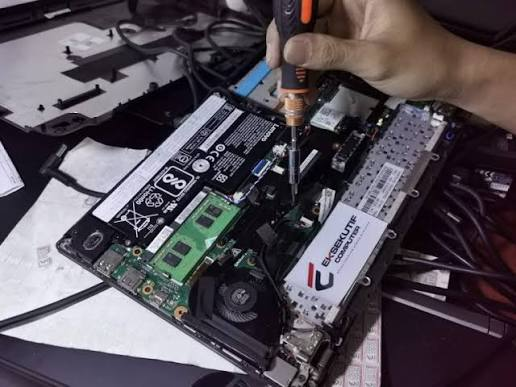

Ahli kelab kami dilatih untuk melakukan pelbagai operasi teknikal bagi memastikan perkakasan pelanggan beroperasi pada tahap optimum. Berikut adalah protokol standard yang kami jalankan:
Pengimbasan menyeluruh menggunakan perisian diagnostik untuk mengesan komponen yang rosak atau tidak stabil.
Pembersihan habuk pada kipas, heatsink, dan papan litar untuk mengelakkan overheating (pemanasan berlebihan).
Aplikasi semula thermal paste berkualiti tinggi pada CPU/GPU untuk memastikan pemindahan haba yang efisien.
Penggantian alat yang rosak (seperti RAM, SSD, atau PSU) dengan komponen baharu yang serasi.